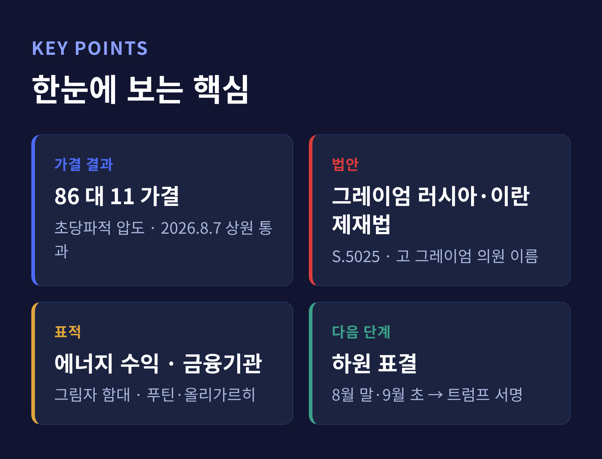
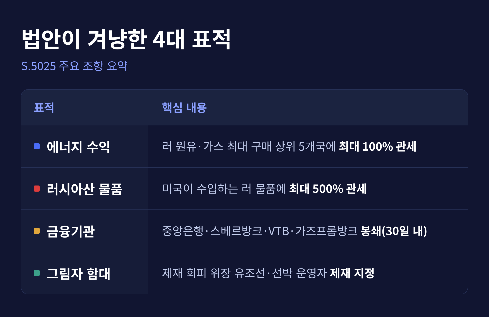
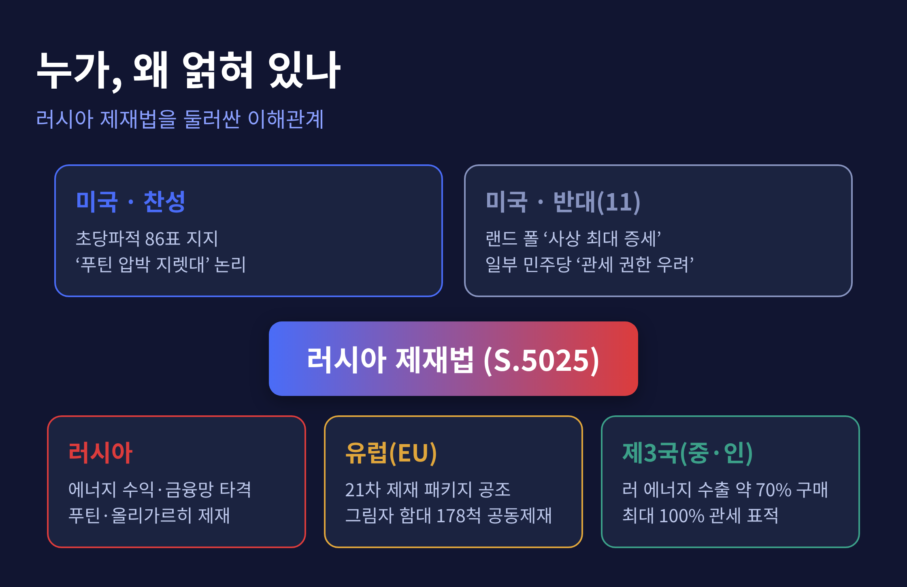
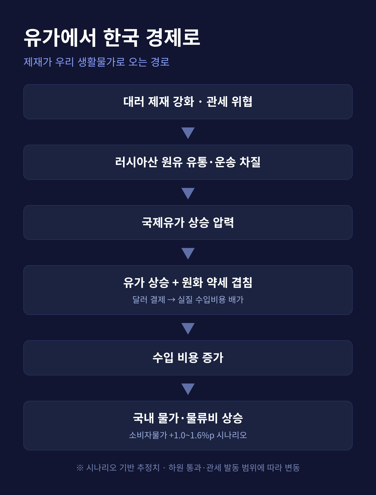
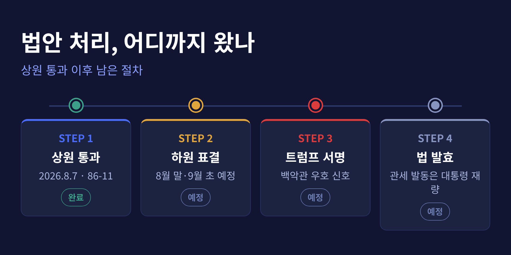

미국 상원 러시아 제재법 통과, 유가와 한국 경제 영향 정리 (2026년 8월)

이번 글에서는 2026년 8월 미국 상원을 통과한 러시아 제재 강화 법안을 정리해 보겠습니다. 무엇이 담겼고, 왜 중요하며, 국제유가와 한국 경제에는 어떤 파장이 예상되는지 차근히 짚습니다. 민감한 국제 사안인 만큼, 찬성과 반대 양측의 논리를 함께 담으려 했습니다.
상원, 86 대 11로 가결하다
2026년 8월 7일, 미국 상원이 러시아 제재 강화 법안을 통과시켰습니다. 표결 결과는 찬성 86, 반대 11. 초당파적 압도라 부를 만한 숫자입니다.
법안의 정식 이름은 '린지 O. 그레이엄 러시아·이란 제재법 2026'입니다. 법안번호는 S.5025. 원래 이 법을 오래 밀어붙인 사람은 공화당의 린지 그레이엄 상원의원이었습니다. 그는 2026년 7월 11일 갑작스럽게 세상을 떠났고, 상원은 그의 이름을 법안에 새겨 통과시켰습니다.
핵심은 하나로 요약됩니다.

법안은 무엇을 겨냥하나
법안이 겨누는 표적은 크게 넷입니다.
첫째, 에너지 수익입니다. 대통령이 러시아산 원유·천연가스를 가장 많이 사들이는 상위 5개국에 최대 100% 관세를 물릴 수 있게 했습니다. 현재 상위 구매국으로는 중국, 인도, 슬로바키아, 헝가리, 아제르바이잔이 거론됩니다.
둘째, 러시아산 물품 자체입니다. 미국이 수입하는 러시아산 물품 전반에는 최대 500%까지 관세를 매길 수 있습니다.
셋째, 금융기관입니다. 법 발효 후 30일 안에 러시아 중앙은행, 스베르방크, VTB방크, 가즈프롬방크 등에 봉쇄성 제재를 겁니다. 이들과 거래하는 외국 금융기관까지 제재 대상이 될 수 있습니다.
넷째, '그림자 함대'입니다. 서방 제재를 피해 러시아산 원유를 몰래 실어 나르는 노후·위장 유조선 무리를 겨냥합니다. 대통령은 이런 선박 운영자를 추가 제재 대상으로 지정할 수 있습니다.
여기서 눈여겨볼 대목이 '2차 제재'입니다. 러시아를 직접 때리는 데 그치지 않고, 러시아와 거래하는 제3국 기업·은행까지 함께 겨냥한다는 뜻입니다. 관세 조항이 중국·인도 같은 구매국으로 향하는 것도 같은 맥락입니다.
여기에 푸틴 대통령과 정부 고위 관리, 올리가르히와 그 가족도 제재 명단에 오릅니다. 트럼프 대통령의 요청으로 이란의 무기·에너지 부문 제재를 넓히는 조항도 함께 들어갔습니다. 법안 이름에 '이란'이 붙은 이유입니다.
다만 예외도 있습니다. 러시아산 천연가스를 전체의 15% 미만으로 쓰면서 수입을 줄이는 나라는 예외를 받을 수 있습니다. 재무장관에게도 재량이 남아 있습니다.

왜 지금, 왜 중요한가
러시아의 우크라이나 전면 침공은 2022년 2월에 시작됐습니다. 전쟁이 길어지면서, 미 의회에는 경제 압박을 더 세게 하자는 목소리가 쌓여 왔습니다. 이 법안 자체도 한동안 계류돼 있다가 이번에 처리됐습니다.
논리는 분명합니다. 러시아 전쟁 자금의 뿌리는 에너지 수출이라는 것. 인도와 중국이 지금 러시아 에너지 수출의 약 70%를 사들이는 것으로 추정됩니다. 그 돈줄을 죄면 전쟁을 이어갈 힘이 준다는 계산입니다.
우크라이나 젤렌스키 대통령은 상원 표결을 의사당에서 직접 지켜봤습니다. 그는 우크라이나의 제안이 파트너국 제재의 밑그림이 돼 왔다며, 유럽에도 압박 강화를 청했습니다.
찬성과 반대, 갈린 목소리
법은 통과됐지만, 안이 매끈했던 것은 아닙니다.
찬성 측은 이 법을 "푸틴을 협상 테이블로 끌어낼 지렛대"로 봅니다. 전쟁 자금을 죄는 가장 현실적인 압박이라는 주장입니다.
반대한 11명의 목소리도 또렷합니다. 공화당의 랜드 폴, 무소속 버니 샌더스, 그리고 민주당 9명이 반대표를 던졌습니다. 랜드 폴은 이 법을 "공화당이 통과시킨 사상 최대 증세"라 불렀습니다. 관세로 수입품 값이 오르면 결국 미국 가정이 더 가난해진다는 것입니다. 그는 '자멸적 경제전쟁'이라는 표현까지 썼습니다.
민주당 일부의 우려는 결이 다릅니다. 대법원이 제동을 걸었던 대통령의 관세 권한을, 이 법이 오히려 정당화한다는 걱정입니다. 행정부에 넓은 관세 권한을 새로 쥐여주기 꺼린다는 뜻이기도 합니다. 반대로 제재 강도가 되레 약하다고 보는 시각도 있었습니다. 웰치 의원은 관세 권한을 더 좁게 못 박도록 법을 손봐야 한다고 주장했습니다. 법을 이끌던 그레이엄 의원이 떠난 지금, 그 권한이 넓게 쓰일 수 있다는 우려에서였습니다.
같은 법을 두고 누구는 너무 세다 하고, 누구는 도리어 약하다 합니다. 국제 제재라는 사안이 왜 늘 복잡한지 보여주는 장면입니다.

유럽과 국제 공조는 어디까지 왔나
미국만 움직이는 것은 아닙니다. 유럽연합은 2026년 7월 23일 21차 제재 패키지로 러시아 에너지·금융·암호자산을 강하게 압박했습니다. 대러 경제제재는 2027년 7월 말까지 1년 더 연장됐습니다.
그림자 함대를 겨냥한 공조도 눈에 띕니다. 미국·영국·EU가 함께 제재한 선박은 2026년 7월 기준 178척. 2024년 7월만 해도 0척이었습니다. EU와 영국이 공동으로 제재한 선박도 같은 기간 7척에서 395척으로 크게 늘었습니다. 서방이 같은 방향으로 발을 맞추고 있다는 신호입니다.
국제유가와 한국 경제, 무엇이 걱정인가
한국 입장에서 가장 예민한 대목은 유가입니다.
제재로 러시아산 원유의 흐름이 막히거나 운송 불확실성이 커지면, 국제유가에는 상승 압력이 실립니다. 일부 분석은 유가 상승이 2026년 한국 소비자물가 상승률을 1.0~1.6%p 끌어올릴 수 있다고 봅니다.
우리 사정은 조금 더 까다롭습니다. 원유 대금을 달러로 치르기 때문입니다. 유가가 오르는데 원화까지 약해지면, 실제로 무는 수입 비용은 곱절로 늘어납니다. 휘발유·경유·LPG 값, 물류비, 생활물가로 그 부담이 번집니다.
통상 리스크도 남습니다. 미국의 2차 제재와 관세가 러시아 에너지 구매국을 겨냥하면, 무역과 공급망 전반에 불확실성이 커집니다. 수출로 먹고사는 한국 경제에는 간접적인 부담입니다.
다만 이 수치들은 시나리오에 근거한 추정입니다. 하원 통과 여부, 관세의 실제 발동 범위, 러시아산 물량의 대체 여부에 따라 결과는 달라질 수 있습니다.

끝으로 한 가지만 덧붙이겠습니다.
이 법은 아직 끝이 아닙니다. 이제 공은 하원으로 넘어갔습니다. 하원은 여름 휴회 중이라 8월 말, 9월 초에야 표결이 가능합니다.
전망은 상원만큼 매끄럽지 않습니다. 전쟁 개입에 부정적인 우파 일부, 관세 조항에 반대하는 민주당 일부가 변수로 남아 있습니다. 하원이 같은 법을 통과시키면, 그때 트럼프 대통령의 서명을 거쳐 법이 확정됩니다. 백악관은 우호적 신호를 보내 왔지만, 관세를 실제로 얼마나 세게 발동할지는 상당 부분 대통령 재량에 달려 있습니다.

결국 남는 물음은 하나입니다.
답은 앞으로 몇 달 안에, 하원의 표결과 유가 그래프가 함께 말해줄 것입니다.